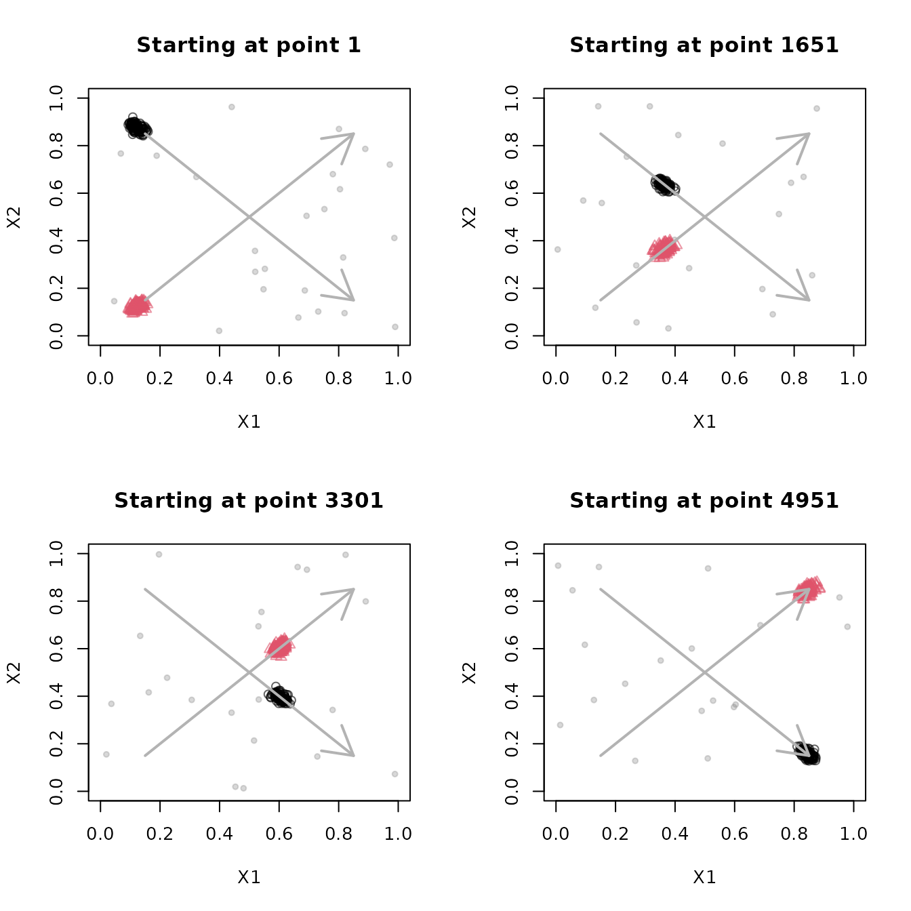
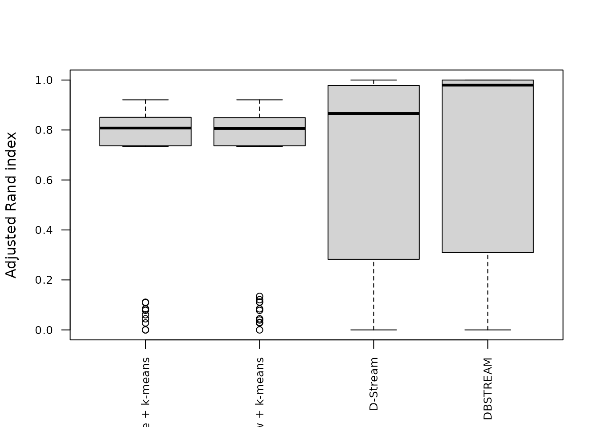
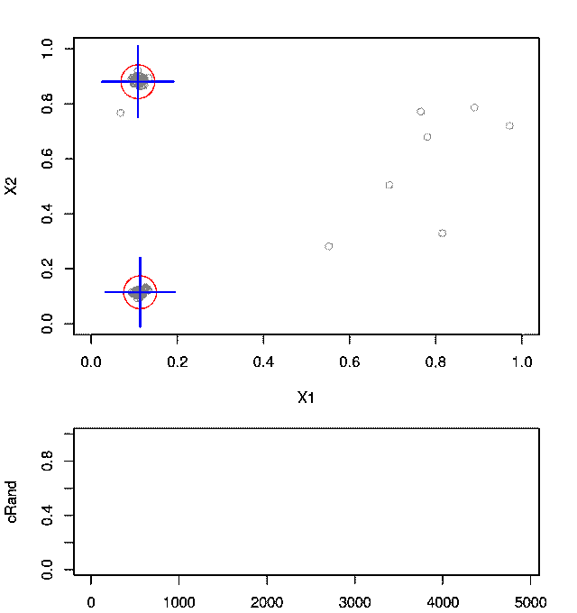

In an evolving stream, the distribution of incoming points changes
over time. A clustering model needs to forget outdated observations to
follow this concept drift. This guide adapts the moving-cluster and
evolving-stream comparison examples from the package’s original
stream_vignette.Rnw.
Inspect moving clusters
DSD_Benchmark(1) generates two clusters that move
diagonally across the unit square and intersect in the middle, together
with background noise.
stream <- DSD_Benchmark(1)
stream
#> Benchmark 1: Two clusters moving diagonally from left to right, meeting
#> in the center (d = 2, k = 2, 5% noise).Class: DSD_MG, DSD_R, DSD
#> With 3 clusters in 2 dimensions. Time is 1Plot four short sections of the stream, skipping 1400 points between
plots. Fixed axis limits make the movement visible. Both
plot() and get_points() advance the
stream.
local({
old_par <- par(mfrow = c(2, 2))
on.exit(par(old_par))
for (i in seq_len(4)) {
plot(stream, n = 250, xlim = c(0, 1), ylim = c(0, 1),
main = paste("Starting at point", 1 + (i - 1) * 1650))
arrows(0.15, 0.85, 0.85, 0.15, col = "gray70", lwd = 2)
arrows(0.15, 0.15, 0.85, 0.85, col = "gray70", lwd = 2)
if (i < 4) invisible(get_points(stream, n = 1400))
}
})
The arrows indicate the directions of travel. Near the crossing, the two generating clusters overlap, making them difficult to distinguish using only the observed features.
Compare models on the same points
Generate and store 5000 points. Resetting a DSD_Memory
stream replays the same points, which makes comparisons fair. Resetting
a generator resets its position but does not in general reproduce the
same random observations.
set.seed(0)
stream <- DSD_Memory(DSD_Benchmark(1), n = 5000)Compare a sample biased toward recent data, a fading sliding window,
D-Stream, and DBSTREAM. The sample and window use k-means to form two
macro-clusters. D-Stream and DBSTREAM determine macro-clusters using
their built-in methods. We use lambda = 0.01 for the window
and density-based methods to forget older points quickly enough to
follow the movement.
algorithms <- list(
"Sample + k-means" = DSC_TwoStage(
micro = DSC_Sample(k = 100, biased = TRUE),
macro = DSC_Kmeans(k = 2)),
"Window + k-means" = DSC_TwoStage(
micro = DSC_Window(horizon = 100, lambda = 0.01),
macro = DSC_Kmeans(k = 2)),
"D-Stream" = DSC_DStream(gridsize = 0.1, lambda = 0.01),
"DBSTREAM" = DSC_DBSTREAM(r = 0.05, lambda = 0.01)
)evaluate_stream() uses prequential evaluation: it
evaluates the current model on the next batch, then updates the model
with those points. Here each batch contains 100 points, producing 50
evaluations per model. The adjusted Rand index (crand)
compares the macro-clustering with the true cluster labels. Assignments
go through micro-clusters to retain the shape of density-based
macro-clusters.
evaluation <- lapply(algorithms, function(model) {
reset_stream(stream)
evaluate_stream(model, stream, horizon = 100, n = 5000,
measure = "crand", type = "macro", assign = "micro")
})
scores <- sapply(evaluation, function(x) x[, "crand"])
head(scores)
#> Sample + k-means Window + k-means D-Stream DBSTREAM
#> [1,] 0.0000000 0.0000000 0.0000000 0.0000000
#> [2,] 0.8125882 0.8066434 1.0000000 1.0000000
#> [3,] 0.8246465 0.8219442 0.9797314 0.9797314
#> [4,] 0.7885402 0.7866667 0.9757549 0.9519319
#> [5,] 0.8252665 0.8267911 0.9783402 0.9783402
#> [6,] 0.8198207 0.8198207 0.5546576 1.0000000The first score is NA because each model starts empty.
Plot the scores over time and compare their distributions over the
stream.
position <- evaluation[[1]][, "points"]
matplot(position, scores, type = "l", lwd = 1,
xlab = "Points processed", ylab = "Adjusted Rand index")
legend("bottomleft", legend = names(algorithms),
col = seq_along(algorithms), lty = seq_along(algorithms), cex = 0.8)
boxplot(scores, las = 2, cex.axis = 0.8, ylab = "Adjusted Rand index")
Read the score trajectories alongside the snapshots: overlap can lower quality even when a model follows the movement. The methods also differ in their noise handling; k-means assigns points to a cluster, while the density-based methods can leave points unassigned. These settings illustrate one experiment rather than establishing a ranking across streams.
Animate the stream and clustering
The following animation shows 5000 points in batches of 100, with DBSTREAM’s micro- and macro-clusters overlaid. The GIF loops automatically, displaying ten frames per second. It is embedded directly in the HTML, so the document can be shared without separate image files.
Knitr creates the GIF using the gifski R package; FFmpeg
is not required. Install gifski before rendering to include
the animation. The animation chunk is skipped when gifski
is unavailable or the output is not HTML.
local({
set.seed(1000)
animation_stream <- DSD_Benchmark(1)
animation_model <- DSC_DBSTREAM(r = 0.05, lambda = 0.01)
for (i in seq_len(50)) {
batch <- get_points(animation_stream, n = 100)
update(animation_model, batch)
plot(animation_model, remove_info(batch), type = "both",
xlim = c(0, 1), ylim = c(0, 1),
main = paste("DBSTREAM after", i * 100, "points"))
}
})
For interactive exploration, the following examples use the package’s animation helpers. They are not run when building the vignette. Start with a fresh stream and model.
stream <- DSD_Benchmark(1)
animate_data(stream, n = 5000, horizon = 100,
xlim = c(0, 1), ylim = c(0, 1))
stream <- DSD_Benchmark(1)
model <- DSC_DBSTREAM(r = 0.05, lambda = 0.01)
animate_cluster(model, stream, n = 5000, horizon = 100,
measure = "crand", type = "macro", assign = "micro",
plot.args = list(xlim = c(0, 1), ylim = c(0, 1), type = "both"))